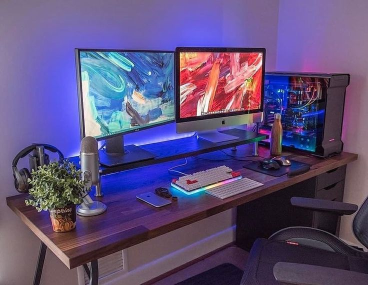
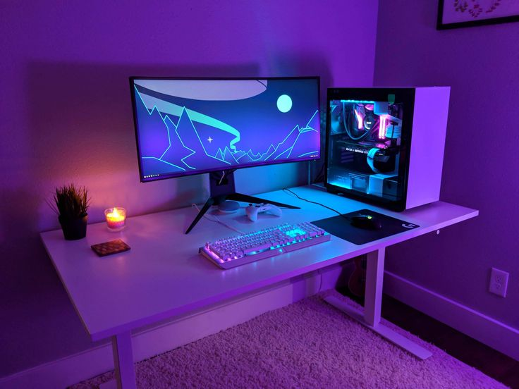
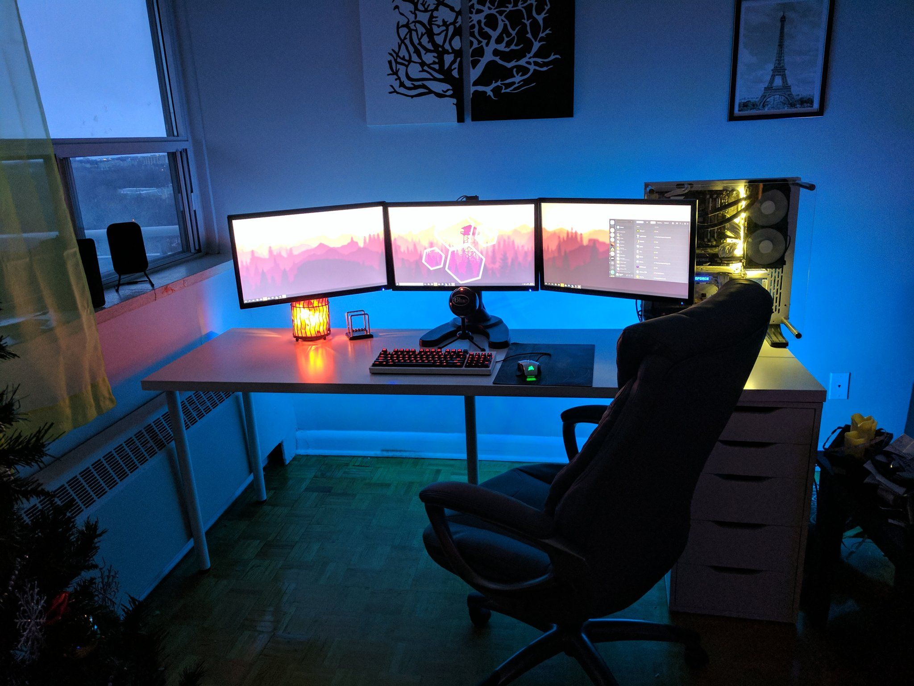

Твич
Twitch – американский сервис прямых трансляций видео, который специализируется на прямых трансляций видеоигр, включая трансляции киберспортивных соревнований, а также предлагает музыкальные трансляции и трансляции «в реальной жизни»
От себя я могу добавить еще две категории – кукинг и просто разговорные стримы по типу «ответы на вопросы от чата»
Twitch был представлен в июне 2011 года как дочерняя компания потоковой платформы общего интереса Justin.tv. Популярность Twitch затмила популярность его аналога для всех.
- В октябре 2013 года веб-сайт насчитывал 45 миллионов уникальных посетителей, а к февралю 2014 года он считался четвертым по величине источником пикового интернет-трафика в Соединенных Штатах. В то же время материнская компания Justin.tv была переименована в Twitch Interactive, чтобы продемонстрировать смещение акцентов, когда Justin.tv была закрыта в августе 2014 года.
- В конце 2013 года, в частности, из-за увеличения числа зрителей, у Twitch были проблемы с задержкой и низкой частотой кадров в Европе. Впоследствии Twitch добавил новые серверы в этом регионе.
На платформе Twitch можно пересматривать сохраненные самой программой стримы в режиме видео если пропустили стрим в режиме реального времени. Можно даже пересмотреть стримы которые были несколько лет назад, они точно так же сохранены самим приложением. Этой функцией активно пользуются фан аккаунты стримеров. Они используют нарезки этих стримов для видео с эдитами и вертикальных, коротких видео в других приложениях.
В Сан-Франциско
В Сан-Франциско
- В декабре 2016 года Twitch анонсировал полуавтоматический инструмент модерации чата (AutoMod), который использует обработку естественного языка и машинное обучение, чтобы отложить потенциально нежелательный контент для просмотра человеком.
- 26 сентября 2019 года Twitch представил новый логотип и обновил дизайн сайта. Дизайн сопровождается новой рекламной кампанией «Вы уже один из нас», которая будет направлена на продвижение участников сообщества платформы. Twitch начал подписывать эксклюзивные соглашения с известными стримерами в декабре 2019 года.
Сообщается, что 6 октября 2021 года анонимный хакер слил всю информацию о Twitch, включая исходный код клиента Twitch и API, а также сведения о выплатах, произведенных почти 2,4 миллионам стримеров с августа 2019 года. Пользователь разместил торрент-ссылку объемом 128 ГБ на 4chan и сказал, что утечка, которая включает в себя исходный код из почти 6000 внутренних репозиториев Git, также является «первой частью» более крупного релиза.
- В августе 2023 года Twitch начал тестировать функцию «Лента открытий» в своих мобильных приложениях, заполненную «избранными» клипами от пользователей, на которых подписаны. В октябре 2023 года Twitch начал внедрять сторис.
- В марте 2017 года Twitch добавил категорию «IRL», которая предназначена для контента, соответствующего правилам Twitch, который не попадает ни в одну из других установленных категорий на сайте (например, прогулка со стримом). Чаще всего эта категория не предназначена для дома и для такого устройства как компьютер. большая часть IRL стримов проходят с телефона на улице либо в любом другом месте. На этой категории стримеры в России исполняют задания, от чата либо подписчиков либо гуляют по городу подрубая стрим
Популярной функцией Twitch является возможность «рейда» на другой канал, когда несколько пользователей, координируемых с другого канала Twitch или другой социальной сети, присоединяются к целевому каналу для оказания поддержки и ободрения. Обычно это используется для повышения популярности целевого канала, особенно если рейд организован популярным стримером.
так обычно выглядит рабочее место стримера:
  
Многие стримеры делают свои рабочие места более яркими, некоторые наоборот более спокойными, а некоторые не могут сидеть на месте и ведут категорию только «IRL стримов» что довольно сильно облегчает жизнь как финансово, так и в плане комфорта и зрителей, и стримера ведь люди ищут стримы на которых им будет максимально комфортно и будет присутствовать ощущение что он общается один на один с кумиром или любимым стримером.
в своё свободное время я почти всегда смотрю стримы на твиче. к примеру- кореша,стопбана, Аланы или данона. конечно же я слежу и за другими стримерами, за всеми хазяевами, даней кашиным и многими другими. я считаю что создатели этого приложения хорошо постарались и им удалось придумать что то необычное. так же я смотрю ютуб канал данона и эксайла. я очень бы хотела сходить на концерт стопбана, либо встретить кого то из них в живую. совсем недавно я лежала в больнице и смотрела днем и ночью только этих блогеров на твиче и ютубе. они очень помогали мне скоротать время в больнице а так же очень поднимали настроение и все мои переживания быстро пропадали.
На ютубе не у всех стримеров есть канал, а только у:
- Эксайла
- Данона
- Саши Парадеевича
- Фраме Тамера
- Дилблина
- Данилы Гориллы
Кроме стримеров на ютубе я довольно часто смотрю:
- Диму Масленникова
- Артема Чернеца
- Егорика
- Яяну
- Алину Мурадимову
- Аню Енину
У меня довольно странный но при этом разнообразный выбор блогеров и видеороликов. Из огромного выбора тем для видео я выберу интервью у Енины, «самые страшные звонки в 911» на канале Чернеца, «пол это лава» от Егорика, «обмани всех и получи денежный приз»-Саня Парадеевич. С каждым днем разнообразие все больше и больше, и, если я смотрю ролики с друзьями или с кем-то из семьи, никто не знает на что падет мой выбор.
После всей прочтенной информации о твиче можно сделать вывод-в современном мире многие даже не знают о таком деле как ведение стримров, некоторые знают, но вовсе не считают за дело, которым можно заниматься по жизни, но они ведь даже не догадываются что многие стримеры зарабатывают довольно прилично, а кроме этого имеют еще и популярность среди современного поколения. Есть и тип людей которые знают про твич, пользуются им, следят за любимыми стримерами, а может быть так же раз в недельку собирают свой не маленький уровень онлайна.